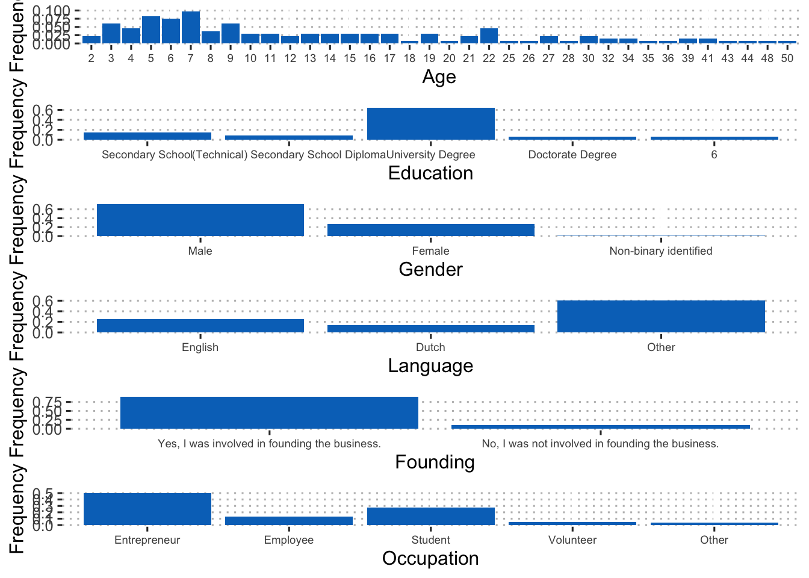
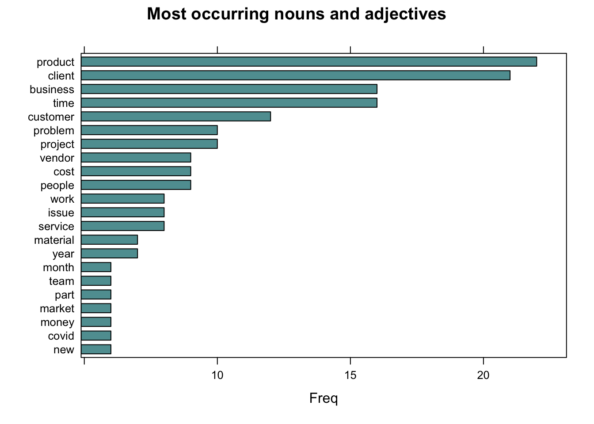
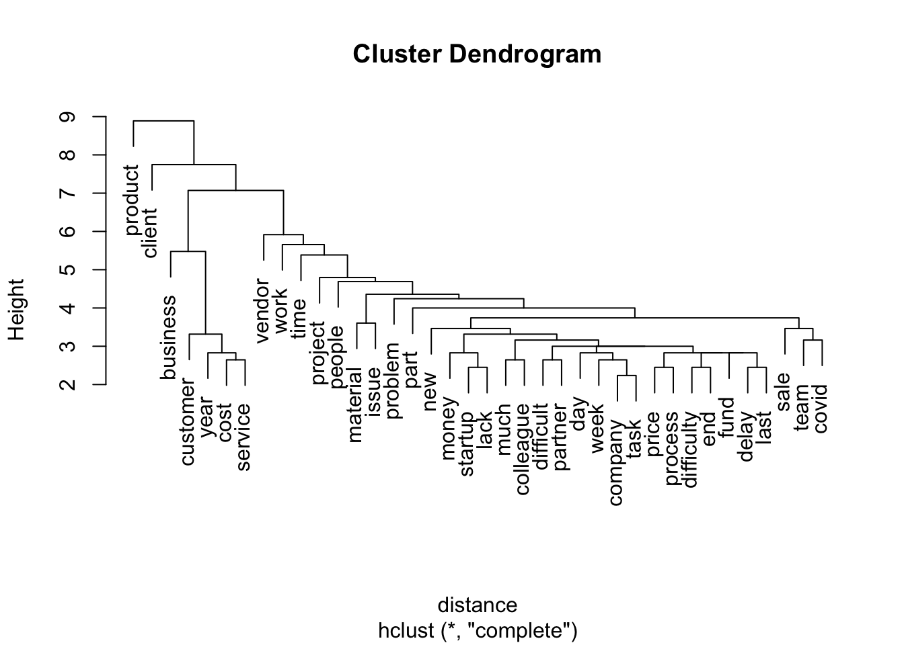
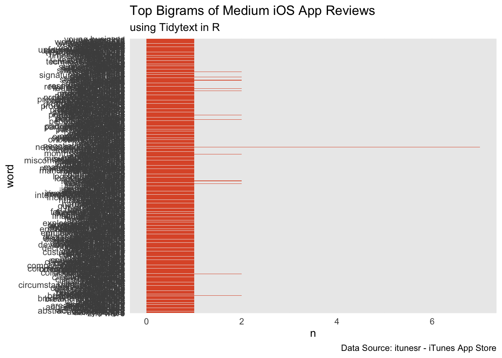
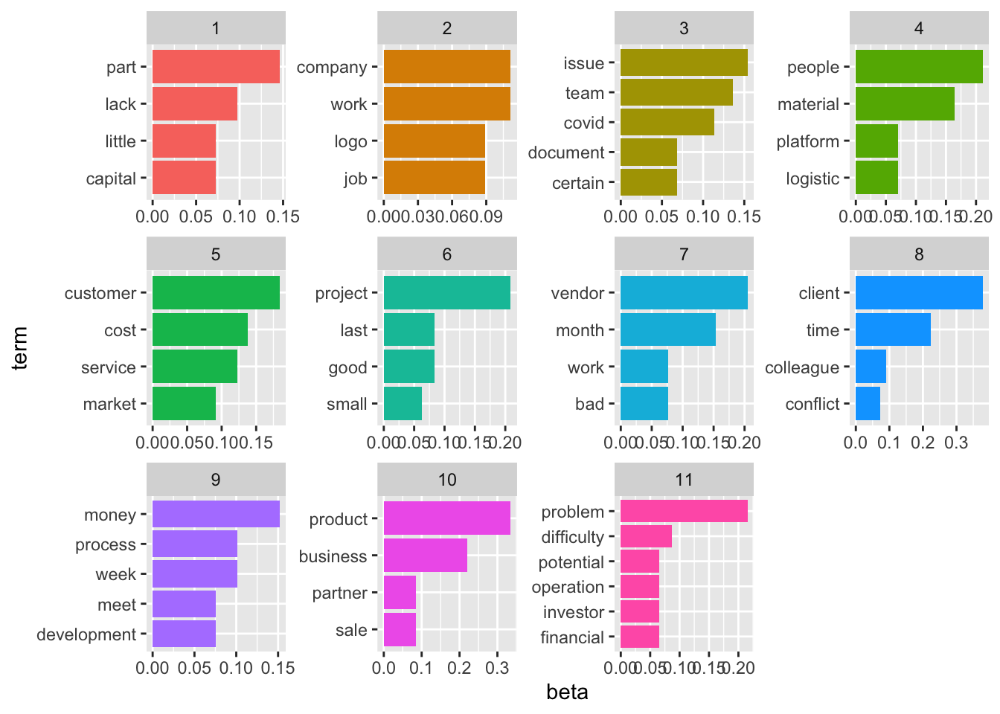
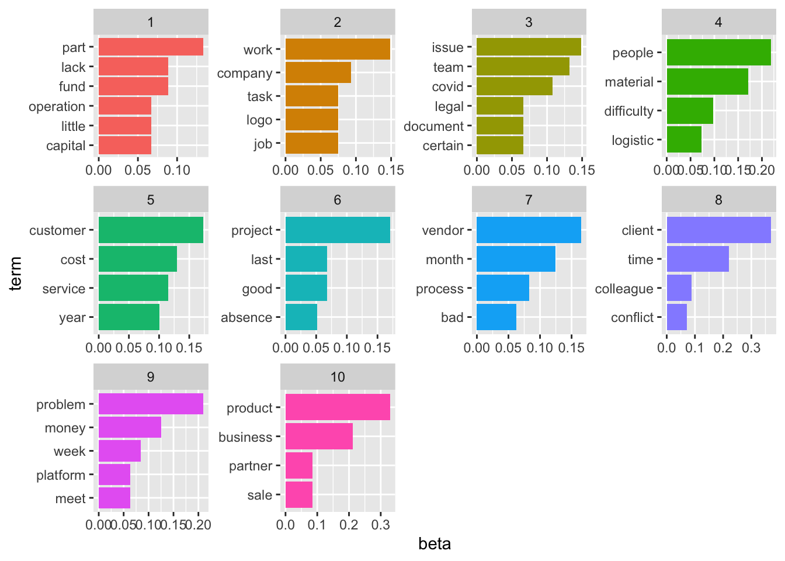
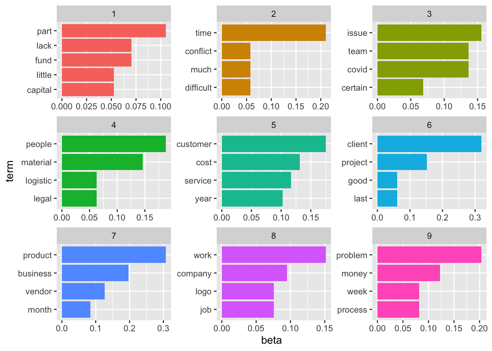
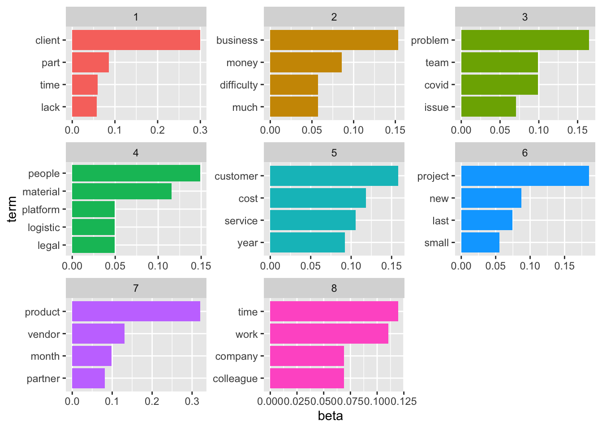
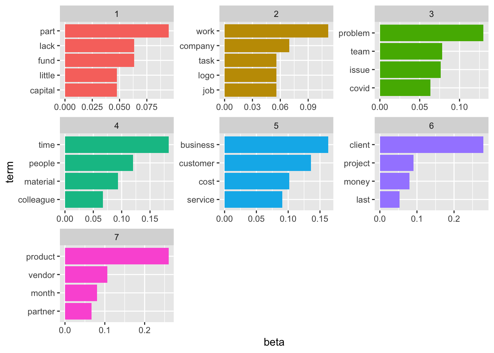
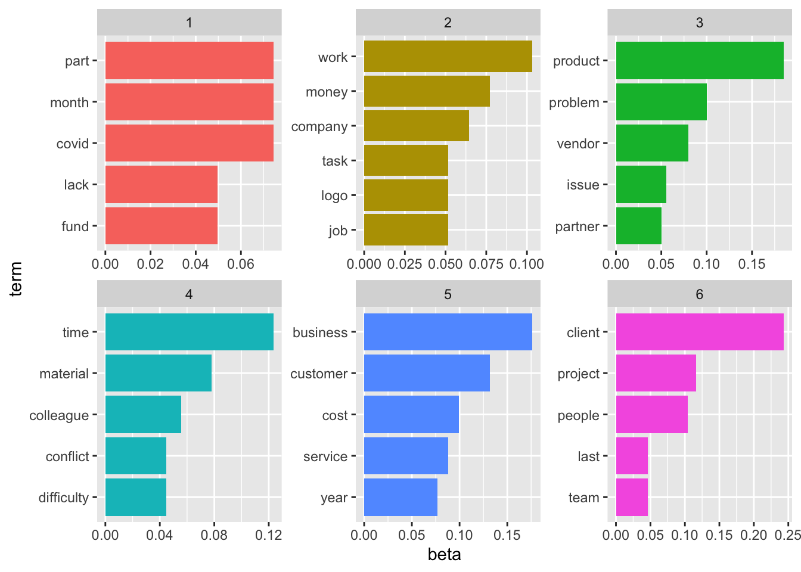

library(kableExtra)
library(tidyverse)
library(expss)
library(lattice)
source("R/custom_functions.R")Using NLP for examining entrepreneurs’ business errors
Some background information
Our goal was to examine the relationship between business errors entrepreneurs make and their overall job and life satisfaction and levels of strain. In addition, we wanted to see in which business areas entrepreneurs make errors and whether errors occurring in different areas show different relationships with performance and well-being outcomes. The sample consisted of entrepreneurs operating in different industries. The data was collected in India and the Netherlands. Error characteristics were assessed at T1 and job strain and job satisfaction were measured at T1, T2, and T3, with time lags of two weeks between the assessments.
Loading standard libraries and source custom functions
Reading in data and renaming
getwd()
dat <- read_csv("data/dat.csv")I renamed the data columns to use them for reliability assessment and correlation analysis.
evdes <- dat$t1evdes_
comp_dat <- dat %>%
dplyr::select(matches("t1emotions|jobstr|jobsa|t1threat|gender|age|found|t1occ$|lang|edu|max_sev"))
alph_dat <- dat %>%
dplyr::select(matches("t1emotions|jobstr|t1threat"))
comp_split <- comp_dat %>%
split.default(sub("_.*", "", names(comp_dat)))
alph_split <- alph_dat %>%
split.default(sub("_.*", "", names(alph_dat)))
comp <- map(comp_split, ~ multicon::composite(.x, nomiss = 0.8), data = .x) %>% as.data.frame(.)
alph <- map(alph_split, ~ psych::alpha(.x), data = .x) %>%
map(~ .x$total)Some items ( t3jobstr_1 ) were negatively correlated with the total scale and
probably should be reversed.
To do this, run the function again with the 'check.keys=TRUE' optionalph_df <- do.call("rbind", alph) %>% round(., 2)Overview categorical variables

Here’s an overview of the reliabilities for the multi-item variables:
alph_df %>%
DT::datatable(
extensions = 'Buttons',
options = list(dom = 'Bfrtip',
buttons = c('excel', "csv"),
pageLength = 20))Next, you see a correlation table:
cor <- round(cor(comp, use="pairwise.complete.obs"), 2)
corstar_select <- data.frame(corstars(comp, removeTriangle = "upper", result="none"))
corstar_select %>%
DT::datatable(
extensions = 'Buttons',
options = list(dom = 'Bfrtip',
buttons = c('excel', "csv"),
pageLength = 35,
lengthMenu = c(25, 50, 75, 94)))Text mining
First, I created an annotated data frame from the text data.
library(udpipe)
ud_model <- udpipe_download_model(language = "english")
ud_model <- udpipe_load_model(ud_model$file_model)
x <- udpipe_annotate(ud_model, x = evdes)
x <- as.data.frame(x)Next, I selected nouns and adjectives from the text data frame and removed duplicate entries.
library(tm)
stats <- subset(x, upos %in% c("NOUN", "ADJ"))
stats2 <- stats %>%
dplyr::group_by(doc_id) %>%
dplyr::mutate(sentences = paste0(token, collapse = " "))
evdes_nouns <- stats2[!(duplicated(stats2$sentences) | duplicated(stats2$sentences)),] %>% dplyr::select(sentences)
evdes <- evdes_nouns$sentences
evdes_1 <- VectorSource(evdes)
TextDoc <- Corpus(evdes_1)In the next step, I cleaned the data by removing unnecessary white space and converting special characters into white space. I also transformed all letters to lower case, removed numbers, stop words (e.g., and, or…), and punctuation. Finally, I lemmatized the remaining words (see here for more information on the lemmatization function.)
library(textstem)
#Replacing "/", "@" and "|" with space
toSpace <- content_transformer(function(x, pattern ) gsub(pattern, " ", x))
TextDoc <- tm_map(TextDoc, toSpace, "/")
TextDoc <- tm_map(TextDoc, toSpace, "@")
TextDoc <- tm_map(TextDoc, toSpace, "\\|")
TextDoc <- tm_map(TextDoc, toSpace, "\\|")
# Convert the text to lower case
TextDoc <- tm_map(TextDoc, content_transformer(tolower))
# Remove numbers
TextDoc <- tm_map(TextDoc, removeNumbers)
# Remove english common stopwords
TextDoc <- tm_map(TextDoc, removeWords, stopwords("english"))
# Remove punctuations
TextDoc <- tm_map(TextDoc, removePunctuation)
# Eliminate extra white spaces
TextDoc <- tm_map(TextDoc, stripWhitespace)
# Text stemming - which reduces words to their root form
#TextDoc <- tm_map(TextDoc, stemDocument)
TextDoc <- tm_map(TextDoc, lemmatize_strings)Build the document martix
# Build a term-document matrix
TextDoc_tdm <- TermDocumentMatrix(TextDoc)
TextDoc_dtm <- DocumentTermMatrix(TextDoc)
TextDoc_tdm <- removeSparseTerms(TextDoc_tdm, .99)
TextDoc_dtm <- removeSparseTerms(TextDoc_dtm, .99)
dtm_m <- as.matrix(TextDoc_tdm)
# Sort by descearing value of frequency
dtm_v <- sort(rowSums(dtm_m),decreasing=TRUE)
dtm_d <- data.frame(word = names(dtm_v),freq=dtm_v)
# Display the top 5 most frequent words
head(dtm_d, 5) word freq
product product 22
client client 21
business business 16
time time 16
customer customer 12# remove sparse termsWord cloud and most common nouns
library(wordcloud)
#generate word cloud
set.seed(1234)
wordcloud(words = dtm_d$word, freq = dtm_d$freq, min.freq = 5,
scale=c(3,.4),
max.words=100, random.order=FALSE, rot.per=0.40,
colors=brewer.pal(8, "Dark2"))# show most common nouns
stats <- subset(x, upos %in% c("NOUN", "ADJ"))
stats <- txt_freq(x = stats$lemma)
dtm_d$word <- factor(dtm_d$word, levels = rev(dtm_d$word))
dtm_head <- head(dtm_d, 22)
barchart(word ~ freq, data = dtm_head, col = "cadetblue", main = "Most occurring nouns and adjectives", xlab = "Freq")
Show connections
library(tidytext)
findAssocs(TextDoc_tdm, "time", corlimit = 0.4)$time
numeric(0)dtm_top <- removeSparseTerms(TextDoc_tdm, sparse = .97)
TextDoc_tdm_m <- as.matrix(dtm_top)
distance <- dist(TextDoc_tdm_m, method = "euclidean")
fit <- hclust(distance, method = "complete")
plot(fit)
ud_model <- udpipe_download_model(language = "english")
ud_model <- udpipe_load_model(ud_model$file_model)
x <- udpipe_annotate(ud_model, x = evdes)
x <- as.data.frame(x)
# show most common nouns
stats <- subset(x, upos %in% c("NOUN", "ADJ"))
stats2 <- stats %>%
dplyr::group_by(doc_id) %>%
dplyr::mutate(sentences = paste0(token, collapse = " "))
evdes_nouns <- stats2[!(duplicated(stats2$sentences)|duplicated(stats2$sentences)),] %>% dplyr::select(sentences)
evdes_nouns %>%
unnest_tokens(word, sentences, token = "ngrams", n = 2) %>%
separate(word, c("word1", "word2"), sep = " ") %>%
unite(word,word1, word2, sep = " ") %>%
dplyr::count(word, sort = TRUE) %>%
slice(1:10) %>%
ggplot() + geom_bar(aes(word, n), stat = "identity", fill = "#de5833") +
theme_minimal() +
coord_flip() +
labs(title = "Top Bigrams of Medium iOS App Reviews",
subtitle = "using Tidytext in R",
caption = "Data Source: itunesr - iTunes App Store")
Topic modeling
11 Topics
library(topicmodels)
rowTotals <- apply(TextDoc_dtm , 1, sum)
TextDoc_dtm <- TextDoc_dtm[rowTotals> 0, ]
# set a seed so that the output of the model is predictable
ap_lda <- LDA(TextDoc_dtm, k = 11, control = list(seed = 1234))
ap_ldaA LDA_VEM topic model with 11 topics.#> A LDA_VEM topic model with 2 topics.
ap_topics <- tidy(ap_lda, matrix = "beta")
ap_topics# A tibble: 1,529 × 3
topic term beta
<int> <chr> <dbl>
1 1 rend 4.87e- 2
2 2 rend 2.69e-133
3 3 rend 7.70e-130
4 4 rend 1.52e-128
5 5 rend 2.22e-152
6 6 rend 6.69e- 44
7 7 rend 5.62e-127
8 8 rend 1.26e-137
9 9 rend 7.37e-127
10 10 rend 4.43e-139
# … with 1,519 more rowsap_top_terms <- ap_topics %>%
group_by(topic) %>%
slice_max(beta, n = 4) %>%
ungroup() %>%
arrange(topic, -beta)
ap_top_terms %>%
mutate(term = reorder_within(term, beta, topic)) %>%
ggplot(aes(beta, term, fill = factor(topic))) +
geom_col(show.legend = FALSE) +
facet_wrap(~ topic, scales = "free") +
scale_y_reordered()
10 Topics
rowTotals <- apply(TextDoc_dtm , 1, sum)
TextDoc_dtm <- TextDoc_dtm[rowTotals> 0, ]
# set a seed so that the output of the model is predictable
ap_lda <- LDA(TextDoc_dtm, k = 10, control = list(seed = 1234))
ap_ldaA LDA_VEM topic model with 10 topics.#> A LDA_VEM topic model with 2 topics.
ap_topics <- tidy(ap_lda, matrix = "beta")
ap_topics# A tibble: 1,390 × 3
topic term beta
<int> <chr> <dbl>
1 1 rend 4.44e- 2
2 2 rend 3.48e- 93
3 3 rend 2.41e- 88
4 4 rend 2.42e- 84
5 5 rend 1.18e-105
6 6 rend 5.93e- 60
7 7 rend 5.37e- 90
8 8 rend 5.87e- 94
9 9 rend 2.76e- 88
10 10 rend 1.23e- 93
# … with 1,380 more rowsap_top_terms <- ap_topics %>%
group_by(topic) %>%
slice_max(beta, n = 4) %>%
ungroup() %>%
arrange(topic, -beta)
ap_top_terms %>%
mutate(term = reorder_within(term, beta, topic)) %>%
ggplot(aes(beta, term, fill = factor(topic))) +
geom_col(show.legend = FALSE) +
facet_wrap(~ topic, scales = "free") +
scale_y_reordered()
9 Topics
rowTotals <- apply(TextDoc_dtm , 1, sum)
TextDoc_dtm <- TextDoc_dtm[rowTotals> 0, ]
# set a seed so that the output of the model is predictable
ap_lda <- LDA(TextDoc_dtm, k = 9, control = list(seed = 1234))
ap_ldaA LDA_VEM topic model with 9 topics.#> A LDA_VEM topic model with 2 topics.
ap_topics <- tidy(ap_lda, matrix = "beta")
ap_topics# A tibble: 1,251 × 3
topic term beta
<int> <chr> <dbl>
1 1 rend 3.51e- 2
2 2 rend 3.78e-71
3 3 rend 1.08e-64
4 4 rend 1.59e-59
5 5 rend 8.88e-81
6 6 rend 5.95e-33
7 7 rend 8.40e-76
8 8 rend 4.06e-70
9 9 rend 4.02e-65
10 1 space 5.06e- 4
# … with 1,241 more rowsap_top_terms <- ap_topics %>%
group_by(topic) %>%
slice_max(beta, n = 4) %>%
ungroup() %>%
arrange(topic, -beta)
ap_top_terms %>%
mutate(term = reorder_within(term, beta, topic)) %>%
ggplot(aes(beta, term, fill = factor(topic))) +
geom_col(show.legend = FALSE) +
facet_wrap(~ topic, scales = "free") +
scale_y_reordered()
8 Topics
rowTotals <- apply(TextDoc_dtm , 1, sum)
TextDoc_dtm <- TextDoc_dtm[rowTotals> 0, ]
# set a seed so that the output of the model is predictable
ap_lda <- LDA(TextDoc_dtm, k = 8, control = list(seed = 1234))
ap_ldaA LDA_VEM topic model with 8 topics.#> A LDA_VEM topic model with 2 topics.
ap_topics <- tidy(ap_lda, matrix = "beta")
ap_topics# A tibble: 1,112 × 3
topic term beta
<int> <chr> <dbl>
1 1 rend 1.43e- 2
2 2 rend 6.31e-68
3 3 rend 2.07e-66
4 4 rend 4.87e-49
5 5 rend 4.22e-77
6 6 rend 1.86e- 2
7 7 rend 9.61e-69
8 8 rend 1.08e-70
9 1 space 9.30e-80
10 2 space 4.12e-87
# … with 1,102 more rowsap_top_terms <- ap_topics %>%
group_by(topic) %>%
slice_max(beta, n = 4) %>%
ungroup() %>%
arrange(topic, -beta)
ap_top_terms %>%
mutate(term = reorder_within(term, beta, topic)) %>%
ggplot(aes(beta, term, fill = factor(topic))) +
geom_col(show.legend = FALSE) +
facet_wrap(~ topic, scales = "free") +
scale_y_reordered()
7 Topics
# set a seed so that the output of the model is predictable
ap_lda <- LDA(TextDoc_dtm, k = 7, control = list(seed = 1234))
ap_ldaA LDA_VEM topic model with 7 topics.#> A LDA_VEM topic model with 2 topics.
ap_topics <- tidy(ap_lda, matrix = "beta")
ap_topics# A tibble: 973 × 3
topic term beta
<int> <chr> <dbl>
1 1 rend 3.16e- 2
2 2 rend 2.97e-64
3 3 rend 9.07e-66
4 4 rend 5.91e-64
5 5 rend 1.02e-72
6 6 rend 4.79e-50
7 7 rend 2.33e-67
8 1 space 1.58e- 2
9 2 space 2.29e-51
10 3 space 4.27e-55
# … with 963 more rowsap_top_terms <- ap_topics %>%
group_by(topic) %>%
slice_max(beta, n = 4) %>%
ungroup() %>%
arrange(topic, -beta)
ap_top_terms %>%
mutate(term = reorder_within(term, beta, topic)) %>%
ggplot(aes(beta, term, fill = factor(topic))) +
geom_col(show.legend = FALSE) +
facet_wrap(~ topic, scales = "free") +
scale_y_reordered()
6 Topics
# set a seed so that the output of the model is predictable
ap_lda <- LDA(TextDoc_dtm, k = 6, control = list(seed = 1234))
ap_ldaA LDA_VEM topic model with 6 topics.#> A LDA_VEM topic model with 2 topics.
ap_topics <- tidy(ap_lda, matrix = "beta")
ap_topics# A tibble: 834 × 3
topic term beta
<int> <chr> <dbl>
1 1 rend 5.39e-12
2 2 rend 2.30e-53
3 3 rend 2.93e-60
4 4 rend 1.11e- 2
5 5 rend 1.67e-60
6 6 rend 1.16e- 2
7 1 space 6.32e-58
8 2 space 2.52e-69
9 3 space 4.62e-77
10 4 space 4.29e-55
# … with 824 more rowsap_top_terms <- ap_topics %>%
group_by(topic) %>%
slice_max(beta, n = 5) %>%
ungroup() %>%
arrange(topic, -beta)
ap_top_terms %>%
mutate(term = reorder_within(term, beta, topic)) %>%
ggplot(aes(beta, term, fill = factor(topic))) +
geom_col(show.legend = FALSE) +
facet_wrap(~ topic, scales = "free") +
scale_y_reordered()